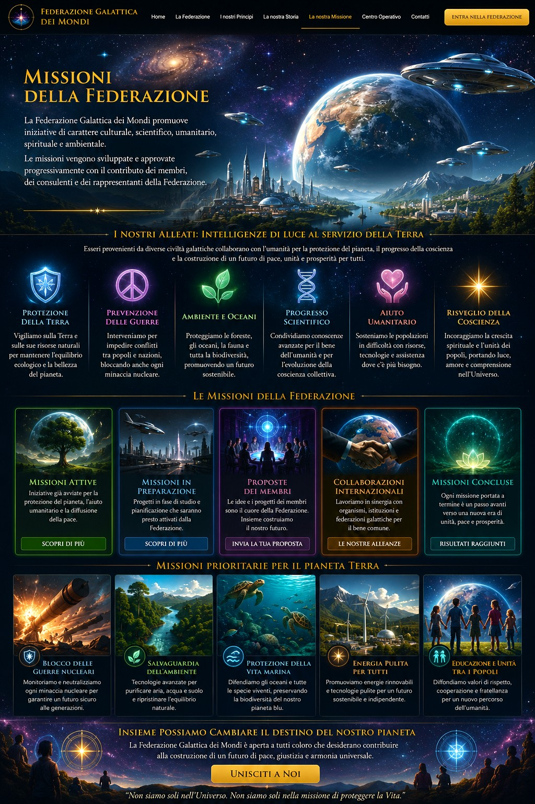

Aree di intervento
Iniziative culturali, scientifiche, umanitarie, spirituali e ambientali al servizio della vita.


Ambiente, oceani, biodiversità, aria, acqua, suolo e uso responsabile delle risorse.
Dialogo, mediazione, disarmo e contrasto alle minacce che mettono a rischio i popoli.
Ricerca etica, medicina, formazione, tecnologia sostenibile e innovazione responsabile.
Sostegno alle popolazioni, alle famiglie, ai minori e alle comunità in difficoltà.
Formazione, spirito critico, cultura e accesso alla conoscenza.
Rapporti con persone, enti, associazioni e progetti compatibili con i valori fondativi.